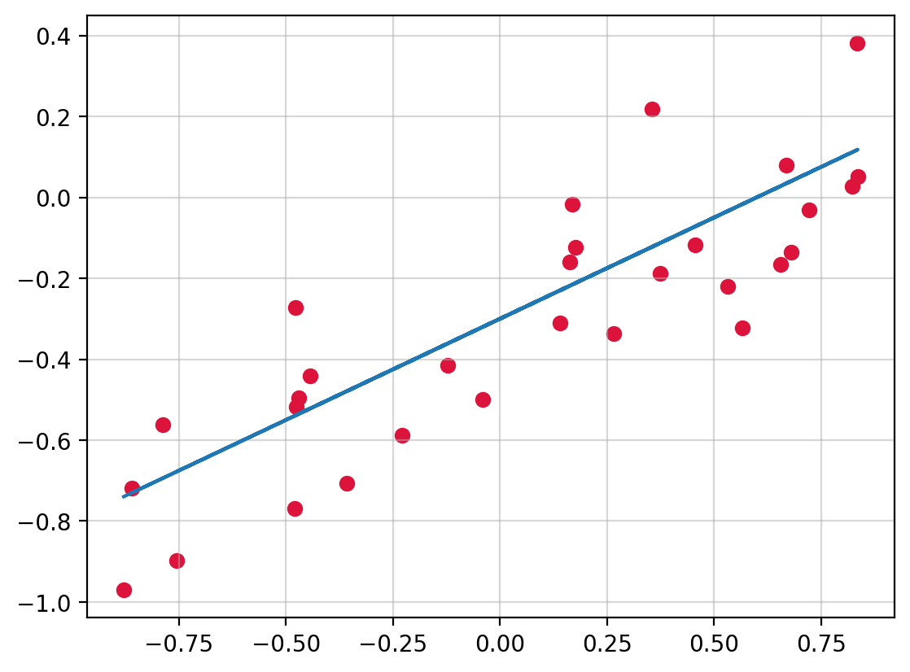
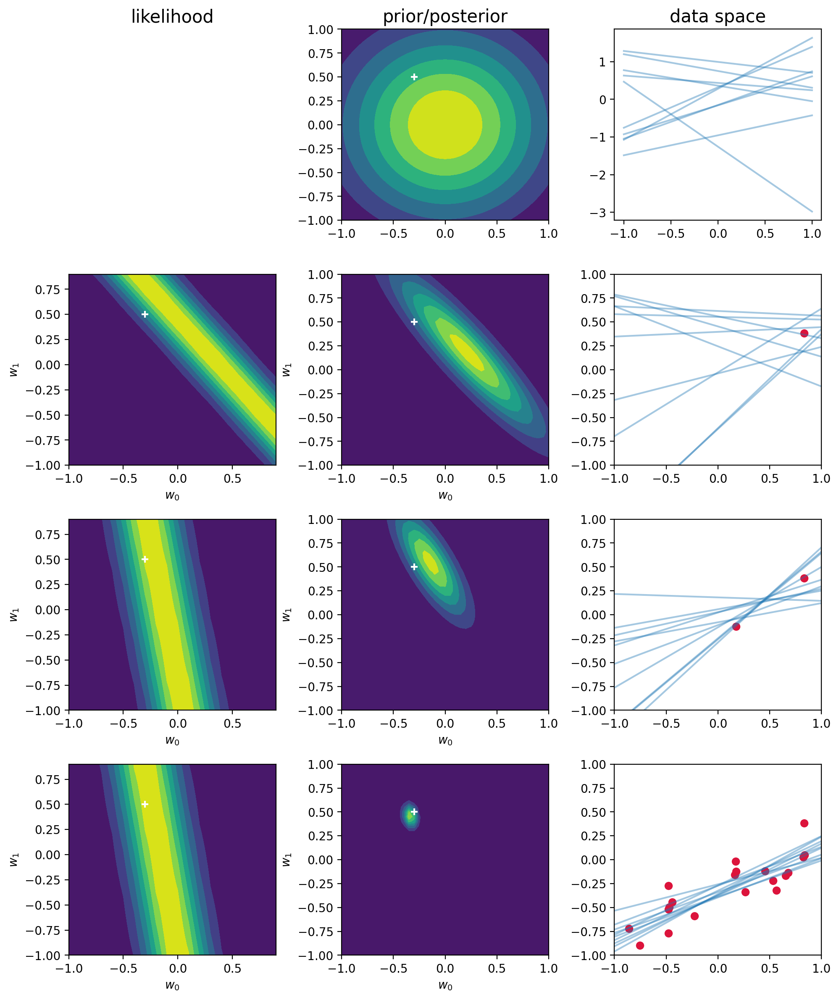
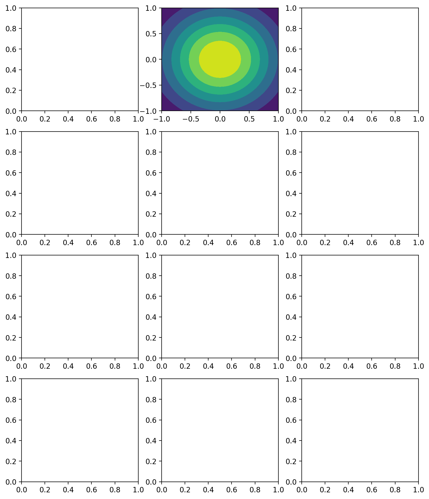
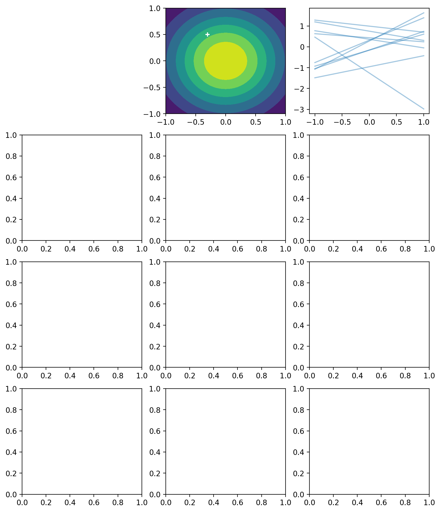

import numpy as np
import matplotlib.pyplot as plt
from scipy.stats import multivariate_normal, norm
from numpy.random import seed, uniform, randn
from numpy.linalg import invBayesian Learning in a Linear Basis Function Model
In this notebook we ilustrate the bayesian learning in a linear basis function model, as well as the sequential update of a posterior distribution.
Taken from Christopher Bishop’s Pattern Recognition and Machine Learning book (p.155)
%config InlineBackend.figure_format = "retina"We consider an input \(x\), a target variable \(t\) and a linear model of the form \[ y(x, {\bf w}) = w_0 + w_1x \]
def f(x, a): return a[0] + a[1] * xseed(314)
a = np.array([-0.3, 0.5])
N = 30
sigma = 0.2
X = uniform(-1, 1, (N, 1))
T = f(X, a) + randn(N, 1) * sigma# plot_sample_w(0, )plt.scatter(X, T, c="crimson")
plt.grid(alpha=0.5)
plt.plot(X, f(X,a))
Our goal is to recover the values \(w_0\) and \(w_1\) from the data.
Recall: \[ p({\textbf w}|t) \propto p(t| {\textbf w}, \beta) p(\bf{w}) \]
beta = (1 / sigma) ** 2 # precision
alpha = 2.0- \(t \sim \mathcal{N}\left({\bf w}^Tx, \beta^{-1}\right)\) (The assigned probability for target variables)
The posterior distribution of \(\bf w\) after \(N\) observations is given by
\[ \begin{align} m_N &= S_N(S_0^{-1}m_0 + \beta\Phi^T{\bf t}) \\ S_N^{-1} &= S_0^{-1} + \beta\Phi^T\Phi \end{align} \]
With * \(\Phi\in\mathbb{R}^{N\times M}\) * \({\bf t}\in\mathbb{R}^N\)
If no data has been yet seen, we consider \[ w \sim \mathcal{N}\left(0, \alpha^{-1}\text{I}\right) \] Which results in a posterior distribution of the form
\[ \begin{align} m_N &= \beta S_N\Phi^T{\bf t} \\ S_N^{-1} &= \alpha \text{I} + \beta\Phi^T\Phi \end{align} \]
def posterior_w(phi, t, S0, m0):
"""
Compute the posterior distribution of
a Gaussian with known precision and conjugate
prior a gaussian
Parameters
----------
phi: np.array(N, M)
t: np.array(N, 1)
S0: np.array(M, M)
The prior covariance matrix
m0: np.array(M, 1)
The prior mean vector
"""
SN = inv(inv(S0) + beta * Phi.T @ Phi)
mN = SN @ (inv(S0) @ m0 + beta * Phi.T @ t)
return SN, mN
def sample_vals(X, T, ix):
"""
Returns
-------
Phi: The linear model transormation
t: the target datapoint
"""
x_in = X[ix]
Phi = np.c_[np.ones_like(x_in), x_in] # concatenate arrays along the second axis
t = T[[ix]]
return Phi, t
def plot_prior(m, S, liminf=-1, limsup=1, step=0.05, ax=plt, **kwargs):
grid = np.mgrid[liminf:limsup + step:step, liminf:limsup + step:step]
nx = grid.shape[-1]
z = multivariate_normal.pdf(grid.T.reshape(-1, 2), mean=m.ravel(), cov=S).reshape(nx, nx).T
return ax.contourf(*grid, z, **kwargs)
def plot_sample_w(mean, cov, size=10, ax=plt):
w = np.random.multivariate_normal(mean=mean.ravel(), cov=cov, size=size)
x = np.linspace(-1, 1)
for wi in w:
ax.plot(x, f(x, wi), c="tab:blue", alpha=0.4)
def plot_likelihood_obs(X, T, ix, ax=plt):
"""
Plot the likelihood function of a single observation
"""
W = np.mgrid[-1:1:0.1, -1:1:0.1]
x, t = sample_vals(X, T, ix) # ith row
mean = W.T.reshape(-1, 2) @ x.T
likelihood = norm.pdf(t, loc=mean, scale= np.sqrt(1 / beta)).reshape(20, 20).T
ax.contourf(*W, likelihood)
ax.scatter(-0.3, 0.5, c="white", marker="+")SN = np.eye(2) / alpha
mN = np.zeros((2, 1))
seed(1643)
N = 20
nobs = [1, 2, 20]
ix_fig = 1
fig, ax = plt.subplots(len(nobs) + 1, 3, figsize=(10, 12))
plot_prior(mN, SN, ax=ax[0,1])
ax[0, 1].scatter(-0.3, 0.5, c="white", marker="+")
ax[0, 0].axis("off")
plot_sample_w(mN, SN, ax=ax[0, 2])
for i in range(0, N+1):
Phi, t = sample_vals(X, T, i)
SN, mN = posterior_w(Phi, t, SN, mN)
if i+1 in nobs:
plot_likelihood_obs(X, T, i, ax=ax[ix_fig, 0])
plot_prior(mN, SN, ax=ax[ix_fig, 1])
ax[ix_fig, 1].scatter(-0.3, 0.5, c="white", marker="+")
ax[ix_fig, 2].scatter(X[:i + 1], T[:i + 1], c="crimson")
ax[ix_fig, 2].set_xlim(-1, 1)
ax[ix_fig, 2].set_ylim(-1, 1)
for l in range(2):
ax[ix_fig, l].set_xlabel("$w_0$")
ax[ix_fig, l].set_ylabel("$w_1$")
plot_sample_w(mN, SN, ax=ax[ix_fig, 2])
ix_fig += 1
titles = ["likelihood", "prior/posterior", "data space"]
for axi, title in zip(ax[0], titles):
axi.set_title(title, size=15)
plt.tight_layout()
In the limit of an infinite number of datapoints, the posterior distribution would become a delta function centered on the true parameter values, shown by the white cross.
Other forms of prior over parameters can be considered. For example, the generalized Gaussian:
\[ p({\bf w}|\alpha) = \left[\frac{q}{2}\left(\frac{q}{2}\right)^{1/q}\frac{1}{\Gamma(1/q)}\right]^M \exp\left(-\frac{\alpha}{2}\sum_{j=1}^M|w_j|^q\right) \]
Finding the maximum posterior distribution over \({\bf w}\) corresponds to minimization of the regularized error function given by:
\[ \frac{1}{2}\sum_{n=1}^N\left(t_n - {\bf w}^T {\bf\phi}({\bf x}_n)\right)^2 + \frac{\lambda}{2}\sum_{j=1}^{M}|w_j|^q \]
The maximum posterior weight vector \({\bf w}_{\text{MAP}}\) considering a generalized Gaussian will not be (in every case) the mean, since the mean will not coincide with the mode.
SN = np.eye(2) / alpha
mN = np.zeros((2, 1))
seed(1643)
N = 20
nobs = [1, 2, 20]
ix_fig = 1
fig, ax = plt.subplots(len(nobs) + 1, 3, figsize=(10, 12))
plot_prior(mN, SN, ax=ax[0,1])<matplotlib.contour.QuadContourSet at 0x299e2dc2910>
SN = np.eye(2) / alpha
mN = np.zeros((2, 1))
seed(1643)
N = 20
nobs = [1, 2, 20]
ix_fig = 1
fig, ax = plt.subplots(len(nobs) + 1, 3, figsize=(10, 12))
plot_prior(mN, SN, ax=ax[0,1])
ax[0, 1].scatter(-0.3, 0.5, c="white", marker="+")
ax[0, 0].axis("off")
plot_sample_w(mN, SN, ax=ax[0, 2])